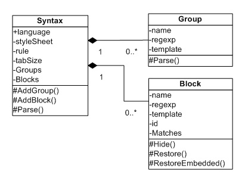
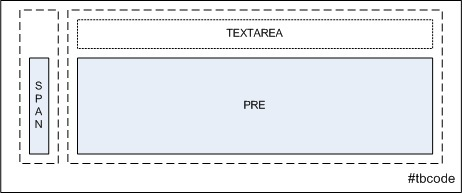

Syntax Highlighting Done Right
Syntax highlighting is a secondary form of notation that helps human readers interpret what a code snippet does and how. The idea is to use different colors—and other font attributes—for string literals so that the contrasts become visual cues for keywords, blocks of text, operators and symbols. Most code editors have a syntax highlighting strategy that along with line numbering, brace matching, and code folding help developers determine scope, detect errors and organize code into sections.
At the heart of every syntax highlighter resides a pattern recognition engine, exactly what a regular expression object is. A syntax is made of sets of keywords, literals, operators, special characters and rules about order of appearance among them. Once a highlighter knows these sets, it can perform a pattern match and replace operation of any text against them. The replacement values wrap the matches in special tags—a secondary notation—that another engine knows how to display.
This article presents a basic strategy that highlights well-formed code snippets using HTML, CSS and JavaScript: you do need to be somewhat familiar with the syntax and objects of these languages to understand how it all works. I use this strategy to highlight every code snippet on this website. It is an open-source, modular, cross-browser compatible, and customizable highlighting strategy; it is not a syntax parsing strategy: it does not check the syntax of code snippets. You are welcome to use it, test it, build on it, and break it—please do let me know!
The Basic Constructs of the Syntax Highlighter
The basic constructs of the syntax highlighter presented here are the highlighting engine (the Syntax class), and two classes contained by the engine: keyword groups (Groups) and block definitions (Blocks). Programming languages usually have keyword groups such as "intrinsic", "reserved", "constants", etc.; this grouping allows for further granularity when highlighting code. Blocks of text such as quoted string literals and comments are also quite typical in almost every programming language, and they can be easily identified by their opening and closing delimiters.
Figure 1. The Basic Constructs of the Syntax Highlighter

A Syntax object holds a language, a reference to a HTML DOM style sheet object, a CSS rule, a tab size, and arrays of groups, and blocks.
The syntax object exposes methods to add groups and blocks to the respective arrays, and a method to "parse" the text to highlight.
Upon construction of a Syntax object, the passed-in CSS rule is appended to the passed-in style sheet using the AddRule utility function (a wrapper for the CSSStyleSheet:insertRule() method). The passed-in rule defines the general style for the language—font family, padding, margins, etc. Groups and blocks have their own CSS rule—additional style attributes such as font color and weight—which are created one level below the language rule. This is the whole point of "cascading styles", and is illustrated by the format string of the printf utility function (a function similar to C#'s String.Format method).
It is worth mentioning that style rules are created "on the fly" using HTML DOM methods, so that the user dictates how to highlight text. Moreover, the function that instances a Syntax object must pass a reference to an existing style sheet element, which can also be created on the fly.
Group and block names are decorated to lower the chances of being interpreted as a keyword or as existing CSS rules. For example, the keyword group named "reserved" is turned into "reserved4ADB". Do notice that these decorated names are still at risk of becoming keywords: groundBEEF, cyberCAFE and liveFEED are quite possible, but it is fairly easy to minimize this side effect by using lengthier (or more complex) decorated names.
Groups
Groups take in a list of keywords (a space-delimited string) and regular expression flags (any combination of 'g', 'm' and 'i') to control case sensitivity. For the purposes of encapsulation, these two arguments are used to build a regular expression of keywords as choices delimited by word boundaries, in regular expression jargon.
The template property is a HTML element to which we apply the group's decorated name as a class name, e.g., <span class="reserved4ADB">{0}</span>, to match the style rule created when the Syntax object instances the group. Notice that upon construction, the template property remains a printf template, for later use in the Parse method.
The Parse method takes in text—usually an entire code snippet—and surrounds keywords with the template's HTML tags. The conditional statements just prevent parsing of malformed keyword groups (those without a name or without keywords).
Blocks
A block's template property is identical to a group's template property (a HTML element with the CSS class attribute). Blocks take in a regular expression object that—hopefully—defines the block's opening and closing delimiters, and what is allowed between them.
Parsing blocks is fundamentally differently from parsing keyword groups. Blocks must be "hidden" before parsing keywords because they are very likely to contain keywords. The Hide method accomplishes this by replacing blocks with pseudo-random unique identifiers.
The id property gets initialized with a lengthy random string and a placeholder for an index number. More complex identifiers can be devised by mixing case or by adding special characters, provided they do not interfere with the syntax highlighting engine, the regular expression syntax and ultimately with the HTML engine. So far, my lengthy and strictly uppercase alphabetic identifiers are very unlikely to be mistaken for keywords.
The Hide method fills the Matches private array and replaces each match with the corresponding indexed id. In case you are wondering, the index is a bijective base 26 "number": 'A', 'B', 'C', ..., 'AA', 'AB' and so on. I use this numeral system to circumvent a problem when there is a block definition for numbers in our Syntax object: base 10 index digits at the very end of the id will be replaced by the next id in the sequence, an undesirable side-effect that could go on indefinetely.
Finally, the Hide method takes additional provisions to preserve indentation across lines (typically white space after consecutive lines used to align comments after the statement terminator).
The Restore method (below) simply replaces the id's with each stored match.
Blocks are very likely to be embedded within other blocks. This block nesting is not explicitly implemented in my strategy, but it is implicitly defined by the order in which blocks are added to the Syntax object. To handle embedded blocks I implemented the RestoreEmbedded method, which builds a new regular expression to replace id's with their corresponding matches until none are left.
As mentioned before, the Syntax object's Parse method hides blocks, highlights keywords and restores blocks and embedded blocks. The last thing left to do is to "tabify" the code snippet to the specified tab size:
I tested distinct CSS attributes to tabify the code (tab-size, -moz-tab-size, -o-tab-size, etc.), but none of them acted consistently across browsers, therefore I declared browser independence with a simple replace. It does require using actual tab characters in code snippets for indentation purposes, but I can live with that.
Using the Syntax Class
For the purpose of modularity, the Syntax object serves as a base class for objects of a specific language. a BatchSyntax object instances a Syntax object, adds groups and blocks to it and returns it; A JavaScriptSyntax object does exactly the same with different arguments:
The block definitions are rather cryptic; the tradeoff for being a compact strategy is that users need to be well-versed in regular expression syntax. If it is any consolation, I put a good deal of research and debuging time to come up with the right expressions. Testing a block definition is an argumentative conversational act: you need to see if the argument achieves the desired effect to test its validity!
All the definitions use the global flag; most of them have opening and closing delimiters and need to escape characters with special meaning in regular expression syntax. For example, the slash and backslash characters must be escaped (with a backslash character!). Some regular expressions take a lookahead, and others need to be explicitly non-greedy. I will go over some of them to clarify things a little.
The html block expects an opening tag of the form "the tag opening character (<) immediately followed by any word ((\S+)\b) followed by anything—tag attributes—except the tag closing character zero or more times ([^>]*) and then the tag closing character (>)". The closing tag requires the slash character (which must be escaped) and uses a back reference (\1) to the word captured in the opening tag by using parenthesis. Anyhing is allowed between the tags, and the search is non-greedy, specified by the ? after the .*, meaning we want to match tags individually. This block definition allows "realizing" HTML in code snippets, which is useful for embedding email addresses, hyperlinks, or images in comment blocks.
JavaScript makes no distinction between single-quoted and doubled-quoted string literals, but CSharp does. I like making the distinction in my JavaScript code, hence the block definition for single-quoted string literals, which incidentally is an example of how to customize the highlighter. It uses quantifiers ({0,1}) to capture '', 's' or (|) escaped and double-escaped characters, '\t' and '\\n' (\\{1,2}.).
Another customization example is adding your own set of keywords: you may have noticed how I highlight my own utility functions and non-intrinsic methods (printf, toBase26 and so on) in pink by adding a "user" keyword group to the JavaScriptSyntax object after instantiation.
The definition for multiline comments expects the /* opening delimiter an the */ closing delimiter. Both characters must be escaped because they have special meaning in regular expressions. To capture newline characters so that the block includes multiple lines, a sequence of zero or more white space or non white space characters are included in a range ([\S\s]*) and the block is made non-greedy by adding the ? right after the range.
Known Issues
-
There is no nesting of keyword groups or blocks; each one is parsed in the order in which they were created, and I have found that to be a problem when the order is changed.
-
Complex regular expressions will break the highlighting. For example, since the regular expression block definition is non-greedy, the HTML block definition breaks it on the closing tag's forward slash. If I make the search greedy, the match will not terminate until the next forward slash, which may be the start of a comment or the start of another regular expression. The block definitions shown above are correctly highlighted because the slash character is escaped manually. Incidentally, the double quote character is also escaped inside regular expressions.
-
Microsoft's shorthand notation for regular expression properties in JavaScript can break the highlighing engine, unless caught early on by a block definition.
-
There are no provisions for language nesting. Web pages typically have script elements written in other than the HTML language, and style elements written with the CSS syntax. Some approaches can identify certain tags and switch languages. Some engines catch tags intrinsic to the language (e.g., the <script> or <stlye> tags for HTML) and switch automatically; some other engines define special tags for the highlighting engine. It would be easy to include a "language switching" block, but the additional logic is beyond the scope of this article.
- Although "realizing" embedded HTML—a popular function of most code editors—is beyond the scope of this article, it is a nice feature to have. Then again, it creates lots of problems:
-
Parsing embedded HTML requires a block definition for HTML before any other block definition. Without it, the HTML will be parsed by other block definitons (e.g., doble-quoted attribute values are treated as string literals, and the slashes in http:// are treated as the start of a single-line comment), breaking the highlighting.
-
Nested HTML elements of the same type will break the block definition for HTML. For example, in <div>one<div>two</div></div>, the match is in bold type.
-
Embedded HTML that we do not want to parse must also be escaped manually. For example, HTML tag characters (< and >) must be escaped as &lt; and &gt; manually in the source text. This could be automated by setting up certain rules, e.g., "HTML inside quoted strings should not be parsed", but again, that is beyond the scope of this article.
-
HTML entities must be tweaked with a non-printing character (such as the ESC character). For example, &nbsp; will still be rendered as a space by the HTML engine. To circumvent this, I must use &nbsp; instead.
Concluding Remarks
This article presented a lightweight syntax highlighting strategy that works. Because it is written in JavaScript and it relies heavily on the power of regular expressions, the most difficult scenario it faces is processing JavaScript with a block definition for regular expressions. It employs client side "on the fly" HTML/CSS. Although it needs more code to pre-process complex snippets and perform more advanced functions, it sufficiently shows what is at the heart of a syntax highlighting strategy.
In part II, I will demonstrate how I use the Syntax object to highlight code in my website. You can save this webpage to download the code;
The engine's objects are in syntax.js; scripts.js handles the window onload to instance and process the proper syntax objects, and the rest of the utility functions are either in prototypes.js, dom.js or utility.js.
The HTML code table
A HTML page typically contains more than one code snippet, therefore I use a repeatable structure to identify and contain code snippets: a
table with a specific ID that equals the name attribute (for cross-browser compatibility) containing certain elements:
Figure 1. HTML elements in a code table

The text area element is the source control, where the actual code resides. It is hidden through the style attribute, so it is just a
placeholder. As opposed to most HTML tags, the contents of a text area element are not parsed by the HTML engine, which is in
advantage in this scenario, particularly if the code language contains embedded HTML entities or special characters.
In fact, you can paste HTML code on a text area without worrying about it being parsed and—quite possibly—breaking the HTML.
The preformatted (PRE) element is the target control, where the highligted code will be shown, and the span
control is the placeholder for line numbers, filled after highlighting the code. I could have used any other tag, but if the syntax
highlighter fails for any reason, the contents of the text area are copied to the preformatted tag, ensuring that the code is shown
with a mono-spaced font.
|